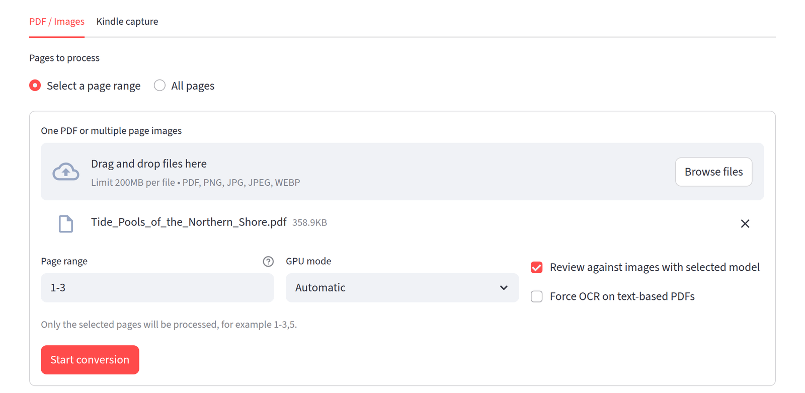
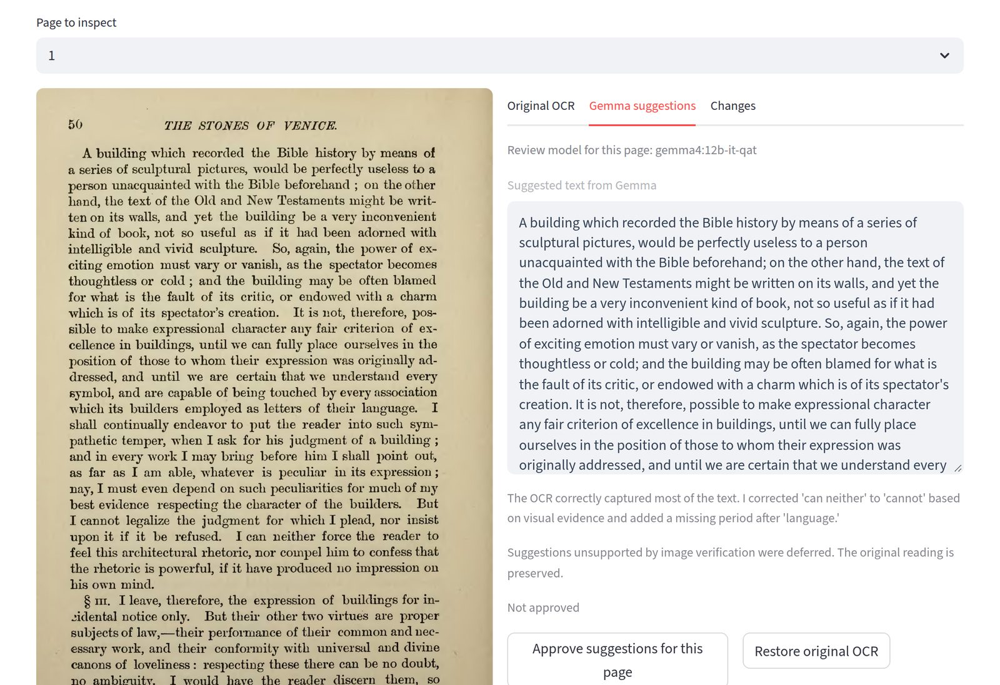
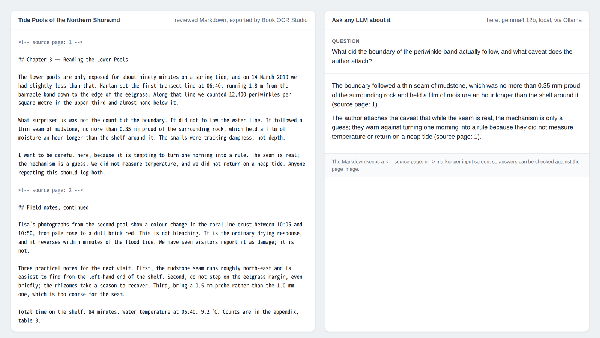

Your books.
Your local workflow.
Your Kindle books, PDFs and page images → local OCR and Gemma review → Markdown, HTML, PDF and EPUB.
Local-first · Source language preservedDownload source ZIPInstallation guide
This is a distribution page, not an online OCR service. Nothing uploaded here is processed. Install the application locally with an NVIDIA GPU and Ollama; the standard setup downloads Gemma 12B locally. C1 OCR review is included; 26B is optional.
What it looks like
Click any image to enlarge it.
{kind=link}

{kind=link}

{kind=link}

Image 2 shows a public-domain scan (Ruskin, The Stones of Venice, 1890 edition, page 50, via Wikimedia Commons); images 1 and 3 use a short synthetic text written for this documentation. The answer in image 3 came from the local gemma4:12b through Ollama. The images illustrate the interface, not an accuracy level.
Import
Use PDFs or page images, or connect a supported Kindle reader in Chrome. Source material stays local in the default Gemma workflow.
Review
Gemma 12B is the default; 26B is optional. Möbius Custom C1 for OCR is an application review profile, not new model weights.
Export
Download Markdown for model context, or create HTML, PDF and EPUB separately. Original OCR and unapproved suggestions remain distinct.
Start locally
Extract the ZIP, read the installation guide, then run bash install.sh and bash run.sh. Install Ollama first. Python 3.10/3.11 and compatible NVIDIA drivers are required. The installer prepares 12B; see the guide for Chrome and optional 26B setup.
12B / 26B comparison and limitations
Optional vision models
Gemma 4 remains recommended. An opt-in OpenAI-compatible connector lets you choose another vision-capable model. Enabling it sends images and OCR text to your chosen endpoint. API compatibility does not guarantee completion or accuracy. Read the connector setup and privacy notes.
Know the limits
OCR and model suggestions can be wrong. Check important names, numbers and quotations against source images. GPU compatibility, languages and browser layouts are not universally validated. Read the validation scope before relying on this beta.